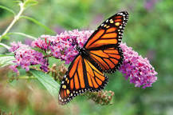
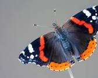

Biological Species / butterfly
Monarch butterfly
The monarch butterfly or simply monarch is a milkweed butterfly in the family Nymphalidae. Other common names, depending on region, include milkweed, common tiger, wanderer, and black-veined brown.
Red admiral
Vanessa atalanta, the red admiral or, previously, the red admirable, is a well-characterized, medium-sized butterfly with black wings, red bands, and white spots. It has a wingspan of about 2 inches. It was first described by Carl Linnaeus in his 1758 10th edition of Systema Naturae.